In bao bì giấy tại TP. Hồ Chí Minh
In Minh Phương in bao bì giấy tại TP. Hồ Chí Minh từ năm 2006. Phần lớn đơn hàng là hộp giấy cho thực phẩm, cà phê, mỹ phẩm và hàng tiêu dùng của các thương hiệu trong và ngoài nước. Chúng tôi cũng làm hộp quà cứng, nhãn, tạp chí và catalogue.
- ISO 9001:2015
- ISO 12647
- Chứng nhận GMI
- FSC® C176695
- In 4 màu
- Ép kim
- Phủ UV
- Bế
- Gấp dán
Hộp giấy, hộp quà và nhãn
Bao bì giấy chiếm phần lớn công việc của chúng tôi. Hộp quà, nhãn và tạp chí được in trên cùng các máy Heidelberg.
-
Hộp giấy
Hộp giấy là sản phẩm chính. Chúng tôi in hộp cho thực phẩm, cà phê, trà, mỹ phẩm và thuốc lá trên máy in offset Heidelberg, sau đó bế và gấp dán trên dây chuyền tự động. Lớp tráng phủ ngay trên máy in bảo vệ bề mặt mà không cần thêm một lượt in.
Giấy Duplex, Ivory, Couché, Bristol
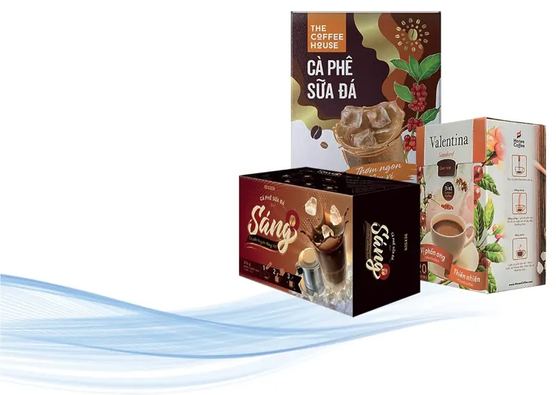
-
Bao bì metalize
Chúng tôi in trên giấy ghép màng metalize bạc hoặc vàng. Bề mặt bóng và mịn hơn giấy metalize thông thường, lớp tráng phủ trên máy giữ chi tiết và màu sắc sắc nét.
Định lượng 150–400 gsm, bạc hoặc vàng
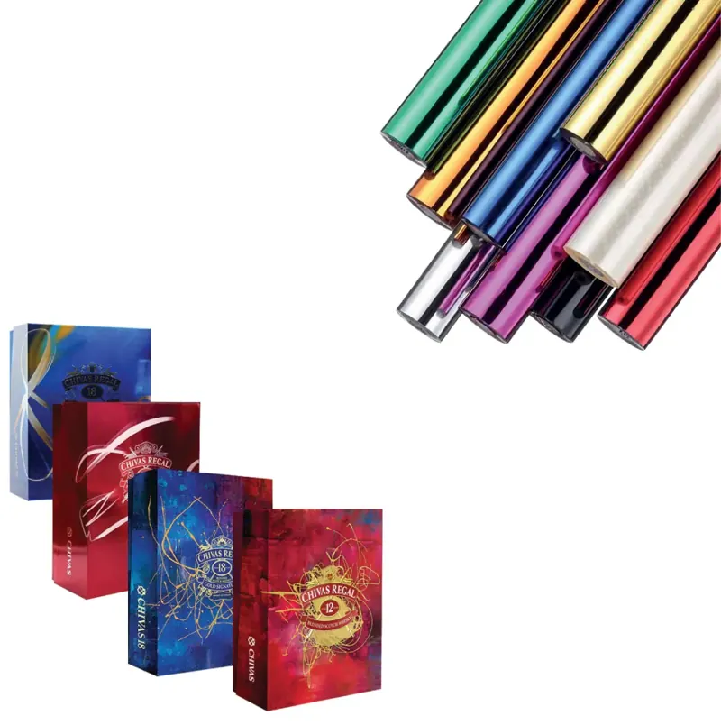
-
Nhãn
Chúng tôi in nhãn giấy và nhãn decal, phủ UV hoặc phủ gốc nước. Lớp phủ chống trầy, chống bẩn và an toàn cho bao bì thực phẩm.
Giấy Couché, decal giấy, cán màng BOPP bóng hoặc mờ
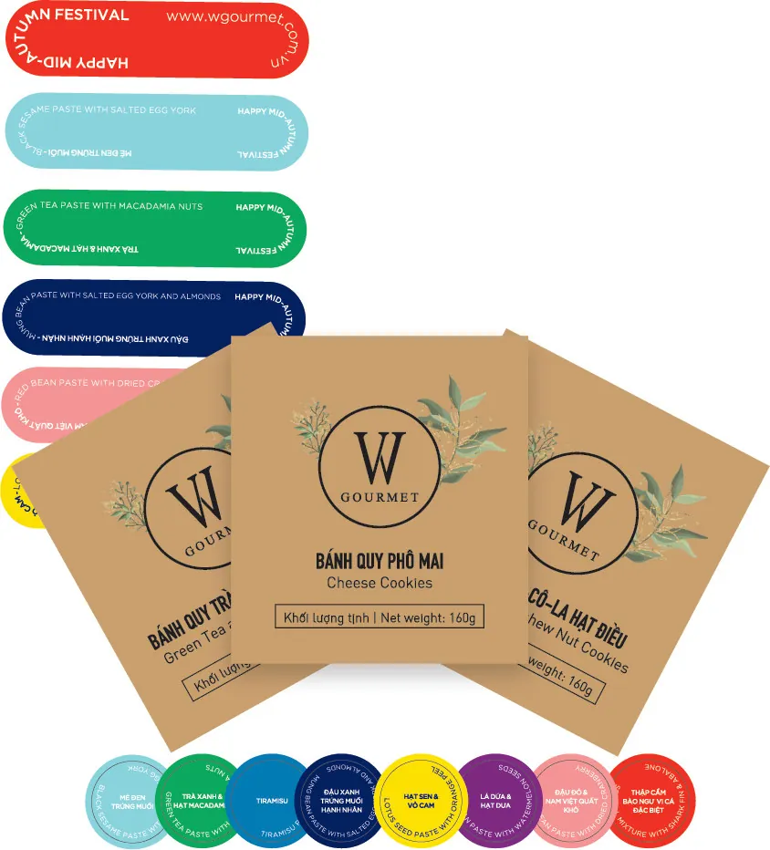
-
Hộp cứng và túi giấy
Chúng tôi làm hộp quà, hộp bánh Trung thu, hộp trà, hộp rượu và túi giấy. Hộp cứng được bồi giấy in bên ngoài, có thể thêm lót định hình, nắp nam châm hoặc quai ruy băng.
Ép kim, dập nổi, UV định hình, cán màng mờ hoặc bóng
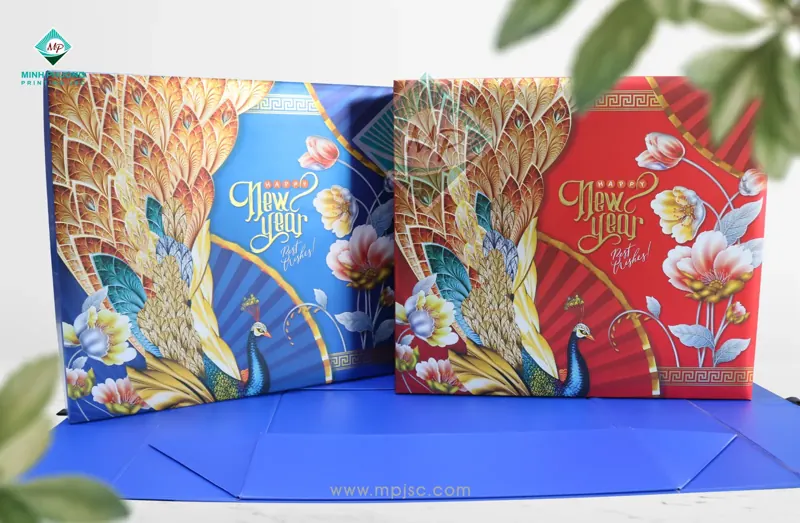
-
Tạp chí, lịch và sách
Chúng tôi in tạp chí, catalogue, lịch và sách. Khách hàng duyệt bản in thử màu trước khi chạy máy, in xong chúng tôi gia công và đóng cuốn.
Giấy 80–400 gsm, đóng kim, keo gáy hoặc lò xo
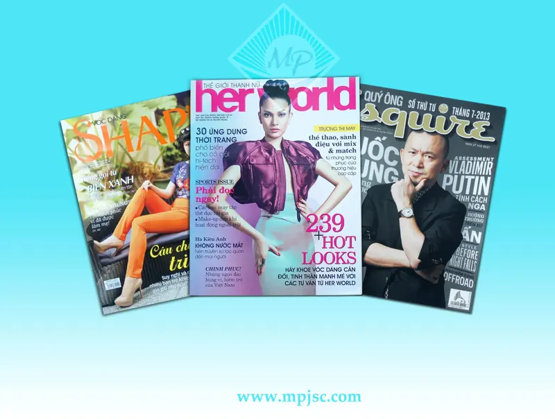
Mẫu bao bì đã in
Đây là một số hộp giấy, hộp quà, nhãn và tạp chí đã in tại xưởng Minh Phương.
Nhà xưởng và máy in offset Heidelberg
Máy in chính là máy offset tờ rời, in 6 màu và tráng phủ trong cùng một lượt. Ở mỗi đơn vị in, mực và nước lên bản kẽm, bản kẽm in sang ống cao su, ống cao su in lên tờ giấy. Đèn UV làm khô mực trước khi tờ in xuống bàn ra giấy.
- Lô mực
- Lô nước
- Bản kẽm trên ống bản
- Ống cao su
- Ống ép in
Công ty Cổ phần In Minh Phương thành lập năm 2006 với mong muốn nâng chất lượng in trong nước. Từ đó đến nay chúng tôi xây nhà xưởng mới, liên tục đầu tư máy in và hệ thống chế bản Heidelberg, áp dụng các tiêu chuẩn màu sắc và chất lượng mà thương hiệu quốc tế yêu cầu.
Năm 2012, Minh Phương đạt chứng nhận GMI, đủ điều kiện cung cấp hàng cho các nhà bán lẻ tại Mỹ.
Chúng tôi cũng tư vấn cho khách hàng khi lên bao bì. Hai bên cùng chọn giấy, cấu trúc hộp và cách gia công để sản phẩm đẹp trên kệ và sản xuất ổn định.
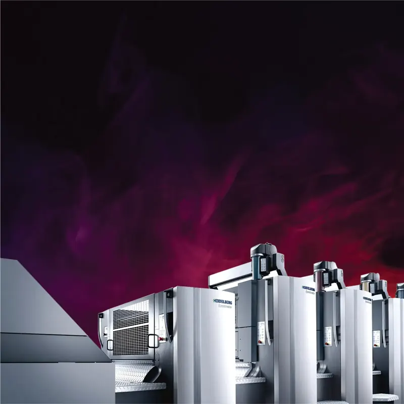
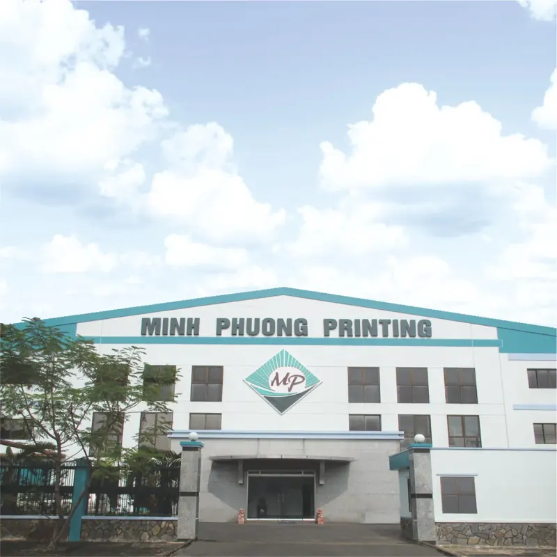
- 2006
- Thành lập tại TP. Hồ Chí Minh
- 3
- Máy in Heidelberg Speedmaster
- 1.000.000+
- Tờ in mỗi ngày
- 720 × 1020
- Khổ in lớn nhất, tính bằng mm
- Speedmaster CX 102-6+L
- Máy in UV, 6 màu và đơn vị tráng phủ
- Speedmaster CD 102-6+L
- 6 màu và đơn vị tráng phủ
- Speedmaster CD 102-5
- 5 màu
- Kiểm soát màu
- Kết nối CIP4, đo màu X-Rite, pha mực theo thông số L*a*b* và ΔE
- Vật liệu
- Giấy 50–500 gsm, giấy metalize, hologram, PP
- Chế bản
- Heidelberg Prinect, bình trang Signa Station, ghi kẽm Suprasetter CTP, in thử Epson SureColor P9080
- Làm mẫu
- Máy cắt Kongsberg X và phần mềm ArtiosCAD
- Gia công
- Cán màng, ép kim, dập nổi, UV định hình, bế, gấp dán, kiểm phẩm tự động
Gia công sau in: cán màng, ép kim, dập nổi, UV
Mọi công đoạn gia công sau in đều làm tại xưởng của chúng tôi. Rê chuột lên từng mẫu để xem bề mặt phản sáng.
Cán màng bóng
Màng BOPP bóng cho màu sâu, bề mặt sáng và dễ lau sạch.
Cán màng mờ
Màng BOPP mờ cho bề mặt mịn và ít chói.
Ép kim
Nhũ vàng, bạc hoặc nhũ màu được ép nóng lên bề mặt in.
Dập nổi
Khuôn dập đẩy logo và họa tiết nổi lên khỏi mặt giấy.
UV định hình và drip-off
Phủ UV bóng tại vị trí chọn, thường trên nền cán màng mờ. Drip-off tạo hiệu ứng tương tự ngay trên máy in.
Giấy metalize
Giấy ghép màng bạc hoặc vàng, in lên cho bề mặt sáng như gương.
Hologram
Giấy hologram đổi màu theo góc nhìn.
Bế và gấp dán
Tờ in được bế và cấn theo khuôn, sau đó gấp dán trên dây chuyền tự động.
Quản lý màu theo ISO 12647
Màu được đo bằng máy chứ không nhìn bằng mắt. Chế bản và máy in liên kết qua CIP4, tờ in được đo bằng thiết bị X-Rite, mực pha theo thông số L*a*b* trong dung sai ΔE cho phép.
Thông số của từng đơn hàng được lưu lại, nên đơn in lại mùa sau vẫn khớp màu lần đầu. Quy trình của chúng tôi đạt chứng nhận ISO 12647 và được GMI đánh giá cho các nhà bán lẻ tại Mỹ.
- Giấy trắngGiấyL* 95 a* 0 b* −2
- CyanC 100L* 55 a* −37 b* −50
- MagentaM 100L* 48 a* 74 b* −3
- VàngY 100L* 89 a* −5 b* 93
- ĐỏM 100 Y 100L* 47 a* 68 b* 48
- Xanh láC 100 Y 100L* 50 a* −65 b* 27
- Xanh dươngC 100 M 100L* 24 a* 22 b* −46
- ĐenK 100L* 16 a* 0 b* 0
Quy trình sản xuất
Mọi đơn hàng đi qua cùng năm bước, quản lý bằng Heidelberg Prinect từ hộp mẫu đầu tiên đến pallet cuối cùng.
-
Làm mẫu
Thiết kế cấu trúc hộp bằng ArtiosCAD và cắt hộp mẫu trắng trên máy Kongsberg để khách kiểm tra kích thước trước khi in.
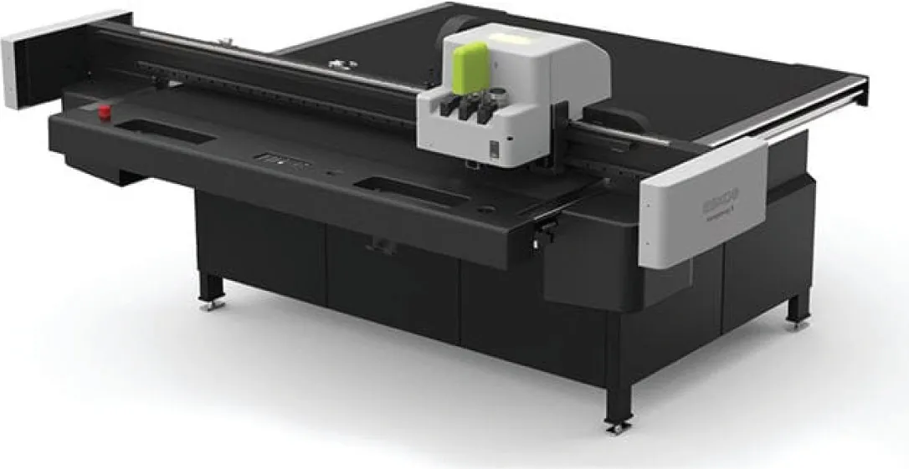
-
Chế bản
Kiểm tra file, quản lý màu, trapping, bình trang bằng Prinect Signa Station rồi ghi kẽm trên máy Heidelberg Suprasetter.
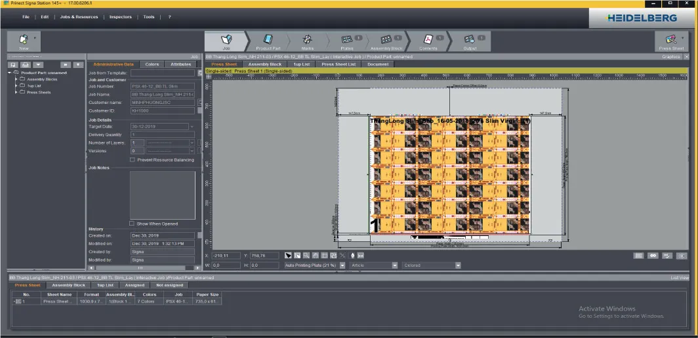
-
In
In trên máy Heidelberg Speedmaster có tráng phủ inline. Thiết bị đo X-Rite giữ màu đúng chuẩn, thông số được lưu lại cho lần in sau.
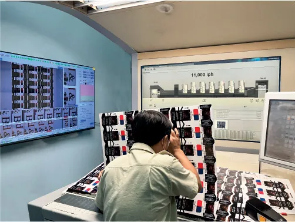
-
Gia công
Cán màng, ép kim, dập nổi, UV định hình, rồi bế, gấp và dán.
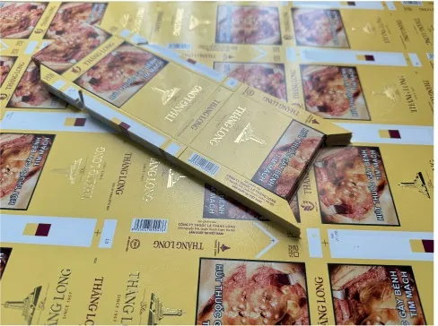
-
Kiểm phẩm và giao hàng
Máy kiểm phẩm tự động soát lỗi hình ảnh, màu sắc và vị trí bế. Sau đó đóng gói, xếp pallet và giao hàng.
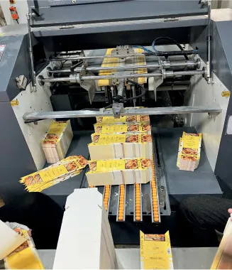
Chứng nhận ISO 9001, ISO 12647, GMI và FSC
ISO 9001:2015
Hệ thống quản lý chất lượng giữ mọi quy trình ổn định và được rà soát để cải tiến.
ISO 12647
Tiêu chuẩn này kiểm soát quy trình in offset để màu đồng nhất giữa các lần in.
GMI
GMI đánh giá chất lượng in và độ chính xác màu cho các nhà bán lẻ tại Mỹ.
FSC® Chuỗi hành trình
Chúng tôi cung cấp được bao bì giấy từ nguồn nguyên liệu có trách nhiệm. Mã chứng nhận FSC-C176695 có hiệu lực đến tháng 4/2027.
Khách hàng tiêu biểu
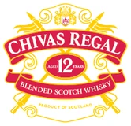
Liên hệ In Minh Phương
Gửi cho chúng tôi file thiết kế, hộp mẫu hoặc yêu cầu ngắn. Chúng tôi sẽ đề xuất loại giấy, cấu trúc hộp và cách gia công phù hợp.
- Điện thoại
- (028) 5435 6680
- contact@mpjsc.com
- Nhà xưởng
- Lô II-5, đường CN11, KCN Tân Bình, phường Tây Thạnh, TP. Hồ Chí Minh
- facebook.com/mpjsc